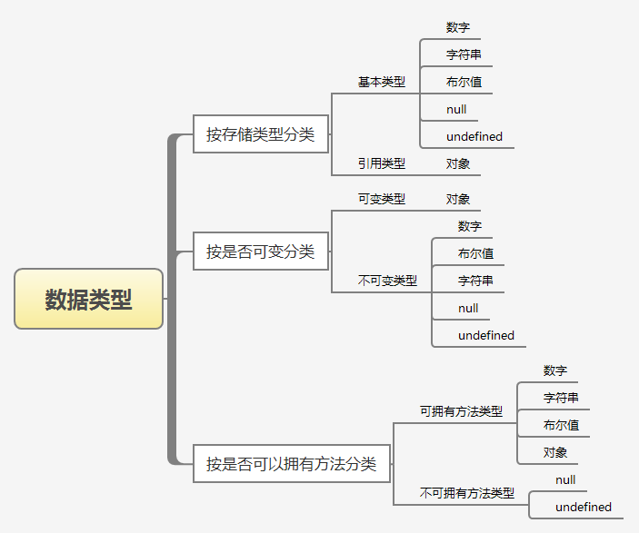

<!DOCTYPE html>


  <html class="light page-post">


<head><meta name="generator" content="Hexo 3.8.0">
  <meta charset="utf-8">
  
  <title>JS数据类型 | pegerys&#39; Hexo</title>

  <meta name="viewport" content="width=device-width, initial-scale=1, maximum-scale=1">

  
    <meta name="keywords" content="JS,">
  

  <meta name="description" content="JS共有七种数据类型：number、string、boolean、symbol、underfined、null，以及object。这其中boolean类型不常用，不做赘述，这次对其他6种数据类型总结一波。 1.分类从不同角度对6种数据类型进行分类： 2.判断1.typeoftypeof返回一个表示数据类型的字符串。返回结果包括number、string、boolean、underfined、nul">
<meta name="keywords" content="JS">
<meta property="og:type" content="article">
<meta property="og:title" content="JS数据类型">
<meta property="og:url" content="http://yoursite.com/2019/04/14/JS数据类型/index.html">
<meta property="og:site_name" content="pegerys&#39; Hexo">
<meta property="og:description" content="JS共有七种数据类型：number、string、boolean、symbol、underfined、null，以及object。这其中boolean类型不常用，不做赘述，这次对其他6种数据类型总结一波。 1.分类从不同角度对6种数据类型进行分类： 2.判断1.typeoftypeof返回一个表示数据类型的字符串。返回结果包括number、string、boolean、underfined、nul">
<meta property="og:locale" content="default">
<meta property="og:image" content="http://yoursite.com/2019/04/14/JS数据类型/1.png">
<meta property="og:updated_time" content="2021-07-30T03:04:48.154Z">
<meta name="twitter:card" content="summary">
<meta name="twitter:title" content="JS数据类型">
<meta name="twitter:description" content="JS共有七种数据类型：number、string、boolean、symbol、underfined、null，以及object。这其中boolean类型不常用，不做赘述，这次对其他6种数据类型总结一波。 1.分类从不同角度对6种数据类型进行分类： 2.判断1.typeoftypeof返回一个表示数据类型的字符串。返回结果包括number、string、boolean、underfined、nul">
<meta name="twitter:image" content="http://yoursite.com/2019/04/14/JS数据类型/1.png">

  

  
    <link rel="icon" href="/images/avatar.jpg">
  

  <link href="/css/styles.css?v=c114cbeddx" rel="stylesheet">


  
    <link rel="stylesheet" href="/css/personal-style.css">
  

  
<!-- Google Analytics -->
<script type="text/javascript">
(function(i,s,o,g,r,a,m){i['GoogleAnalyticsObject']=r;i[r]=i[r]||function(){
(i[r].q=i[r].q||[]).push(arguments)},i[r].l=1*new Date();a=s.createElement(o),
m=s.getElementsByTagName(o)[0];a.async=1;a.src=g;m.parentNode.insertBefore(a,m)
})(window,document,'script','//www.google-analytics.com/analytics.js','ga');

ga('create', 'UA-38189205-1', 'auto');
ga('send', 'pageview');

</script>
<!-- End Google Analytics -->


  
  <script type="text/javascript">
    var _hmt = _hmt || [];
    (function() {
      var hm = document.createElement("script");
      hm.src = "//hm.baidu.com/hm.js?57e94d016e201fba3603a8a2b0263af0";
      var s = document.getElementsByTagName("script")[0];
      s.parentNode.insertBefore(hm, s);
    })();
  </script>


  
  <script type="text/javascript">
	(function(){
	    var bp = document.createElement('script');
	    var curProtocol = window.location.protocol.split(':')[0];
	    if (curProtocol === 'https') {
	        bp.src = 'https://zz.bdstatic.com/linksubmit/push.js';        
	    }
	    else {
	        bp.src = 'http://push.zhanzhang.baidu.com/push.js';
	    }
	    var s = document.getElementsByTagName("script")[0];
	    s.parentNode.insertBefore(bp, s);
	})();
  </script>


  
    <script async src="https://busuanzi.ibruce.info/busuanzi/2.3/busuanzi.pure.mini.js"></script>
    <link rel="stylesheet" href="//cdn.bootcss.com/font-awesome/4.3.0/css/font-awesome.min.css">
  

</head>
</html>
<body>


  
    <span id="toolbox-mobile" class="toolbox-mobile">盒子</span>
  

  <div class="post-header CENTER">
   
  <div class="toolbox">
    <a class="toolbox-entry" href="/">
      <span class="toolbox-entry-text">盒子</span>
      <i class="icon-angle-down"></i>
      <i class="icon-home"></i>
    </a>
    <ul class="list-toolbox">
      
        <li class="item-toolbox">
          <a class="CIRCLE" href="/archives/" rel="noopener noreferrer" target="_self">
            博客
          </a>
        </li>
      
        <li class="item-toolbox">
          <a class="CIRCLE" href="/category/" rel="noopener noreferrer" target="_self">
            分类
          </a>
        </li>
      
        <li class="item-toolbox">
          <a class="CIRCLE" href="/tag/" rel="noopener noreferrer" target="_self">
            标签
          </a>
        </li>
      
        <li class="item-toolbox">
          <a class="CIRCLE" href="/link/" rel="noopener noreferrer" target="_self">
            友链
          </a>
        </li>
      
        <li class="item-toolbox">
          <a class="CIRCLE" href="/about/" rel="noopener noreferrer" target="_self">
            关于
          </a>
        </li>
      
        <li class="item-toolbox">
          <a class="CIRCLE" href="/atom.xml" rel="noopener noreferrer" target="_blank">
            RSS
          </a>
        </li>
      
        <li class="item-toolbox">
          <a class="CIRCLE" href="/search/" rel="noopener noreferrer" target="_self">
            搜索
          </a>
        </li>
      
    </ul>
  </div>


</div>


  <div id="toc" class="toc-article">
    <strong class="toc-title">文章目录</strong>
    <ol class="toc"><li class="toc-item toc-level-1"><a class="toc-link" href="#1-分类"><span class="toc-text">1.分类</span></a></li><li class="toc-item toc-level-1"><a class="toc-link" href="#2-判断"><span class="toc-text">2.判断</span></a><ol class="toc-child"><li class="toc-item toc-level-2"><a class="toc-link" href="#1-typeof"><span class="toc-text">1.typeof</span></a></li><li class="toc-item toc-level-2"><a class="toc-link" href="#2-instanceof"><span class="toc-text">2.instanceof</span></a></li><li class="toc-item toc-level-2"><a class="toc-link" href="#3-delete"><span class="toc-text">3.delete</span></a></li><li class="toc-item toc-level-2"><a class="toc-link" href="#4-forin"><span class="toc-text">4.forin</span></a></li></ol></li><li class="toc-item toc-level-1"><a class="toc-link" href="#3-类型转换"><span class="toc-text">3.类型转换</span></a><ol class="toc-child"><li class="toc-item toc-level-2"><a class="toc-link" href="#1-任意类型转字符串"><span class="toc-text">1.任意类型转字符串</span></a></li><li class="toc-item toc-level-2"><a class="toc-link" href="#2-任意类型转数字"><span class="toc-text">2.任意类型转数字</span></a></li><li class="toc-item toc-level-2"><a class="toc-link" href="#3-任意类型转布尔"><span class="toc-text">3.任意类型转布尔</span></a></li></ol></li><li class="toc-item toc-level-1"><a class="toc-link" href="#4-内存图"><span class="toc-text">4.内存图</span></a></li><li class="toc-item toc-level-1"><a class="toc-link" href="#5-深拷贝与浅拷贝"><span class="toc-text">5.深拷贝与浅拷贝</span></a><ol class="toc-child"><li class="toc-item toc-level-2"><a class="toc-link" href="#1-对于简单类型来说，复制就是深拷贝。"><span class="toc-text">1.对于简单类型来说，复制就是深拷贝。</span></a></li><li class="toc-item toc-level-2"><a class="toc-link" href="#2-对于复杂类型的数据（对象）来说。才要区分浅拷贝和深拷贝。"><span class="toc-text">2.对于复杂类型的数据（对象）来说。才要区分浅拷贝和深拷贝。</span></a></li></ol></li></ol>
  </div>


<div class="content content-post CENTER">
   <article id="post-JS数据类型" class="article article-type-post" itemprop="blogPost">
  <header class="article-header">
    <h1 class="post-title">JS数据类型</h1>

    <div class="article-meta">
      <span>
        <i class="icon-calendar"></i>
        <span>2019.04.14</span>
      </span>

      
        <span class="article-author">
          <i class="icon-user"></i>
          <span>pergery peng</span>
        </span>
      

      
  <span class="article-category">
    <i class="icon-list"></i>
    <a class="article-category-link" href="/categories/JS/">JS</a>
  </span>


      

      
      <i class="fa fa-eye"></i> 
        <span id="busuanzi_container_page_pv">
           &nbsp热度 <span id="busuanzi_value_page_pv">
           <i class="fa fa-spinner fa-spin"></i></span>℃
        </span>
      
      
    </div>
  </header>

  <div class="article-content">
    
      <p>JS共有七种数据类型：number、string、boolean、symbol、underfined、null，以及object。这其中boolean类型不常用，不做赘述，这次对其他6种数据类型总结一波。</p>
<h1 id="1-分类"><a href="#1-分类" class="headerlink" title="1.分类"></a>1.分类</h1><p>从不同角度对6种数据类型进行分类：<br></p>
<h1 id="2-判断"><a href="#2-判断" class="headerlink" title="2.判断"></a>2.判断</h1><h2 id="1-typeof"><a href="#1-typeof" class="headerlink" title="1.typeof"></a>1.typeof</h2><p>typeof返回一个表示数据类型的字符串。返回结果包括number、string、boolean、underfined、null，以及object。typeof可以对基本类型number、string  、boolean、undefined做出准确的判断（null除外，typeof null===“object”，这是由于历史的原因，我就不巴拉巴拉了，其实我也说不清楚😢）；而对于引用类型，除了function之外返回的都是object。但当我们需要知道某个对象的具体类型时，typeof就显得有些力不从心了</p>
<h2 id="2-instanceof"><a href="#2-instanceof" class="headerlink" title="2.instanceof"></a>2.instanceof</h2><p>当我们需要知道某个对象的具体类型时,可以用运算符 <code>instanceof，instanceof</code>操作符判断左操作数对象的原型链上是否有右边这个构造函数的<code>prototype</code>属性，也就是说指定对象是否是某个构造函数的实例，最后返回布尔值。 检测的我们用一段伪代码来模拟instanceof内部执行过程：<br><figure class="highlight plain"><table><tr><td class="gutter"><pre><span class="line">1</span><br><span class="line">2</span><br><span class="line">3</span><br><span class="line">4</span><br><span class="line">5</span><br><span class="line">6</span><br><span class="line">7</span><br><span class="line">8</span><br><span class="line">9</span><br></pre></td><td class="code"><pre><span class="line">instanceof (A,B) = &#123;</span><br><span class="line">    var L = A.__proto__;</span><br><span class="line">    var R = B.prototype;</span><br><span class="line">    if(L === R) &#123;</span><br><span class="line">        //A的内部属性__proto__指向B的原型对象</span><br><span class="line">        return true;</span><br><span class="line">    &#125;</span><br><span class="line">    return false;</span><br><span class="line">&#125;</span><br></pre></td></tr></table></figure></p>
<h2 id="3-delete"><a href="#3-delete" class="headerlink" title="3.delete"></a>3.delete</h2><p>我们可以使用<code>delete</code>操作符删除对象里的key，使用如下：<br><figure class="highlight plain"><table><tr><td class="gutter"><pre><span class="line">1</span><br><span class="line">2</span><br><span class="line">3</span><br></pre></td><td class="code"><pre><span class="line">var obj =&#123;name：&quot;xxx&quot;；&#125;</span><br><span class="line">delete obj.name</span><br><span class="line">&quot;name&quot; in obj //false</span><br></pre></td></tr></table></figure></p>
<h2 id="4-forin"><a href="#4-forin" class="headerlink" title="4.forin"></a>4.forin</h2><p><code>for...in</code>循环用来遍历一个对象的全部属性。<br><figure class="highlight plain"><table><tr><td class="gutter"><pre><span class="line">1</span><br><span class="line">2</span><br><span class="line">3</span><br><span class="line">4</span><br><span class="line">5</span><br><span class="line">6</span><br><span class="line">7</span><br><span class="line">8</span><br></pre></td><td class="code"><pre><span class="line">var obj = &#123;a: 1, b: 2, c: 3&#125;;</span><br><span class="line"></span><br><span class="line">for (var i in obj) &#123;</span><br><span class="line">  console.log(obj[i]);</span><br><span class="line">&#125;</span><br><span class="line">// 1</span><br><span class="line">// 2</span><br><span class="line">// 3</span><br></pre></td></tr></table></figure></p>
<p>下面是一个使用<code>for...in</code>循环，提取对象属性名的例子。<br><figure class="highlight plain"><table><tr><td class="gutter"><pre><span class="line">1</span><br><span class="line">2</span><br><span class="line">3</span><br><span class="line">4</span><br><span class="line">5</span><br><span class="line">6</span><br><span class="line">7</span><br><span class="line">8</span><br><span class="line">9</span><br><span class="line">10</span><br><span class="line">11</span><br><span class="line">12</span><br></pre></td><td class="code"><pre><span class="line">var obj = &#123;</span><br><span class="line">  x: 1,</span><br><span class="line">  y: 2</span><br><span class="line">&#125;;</span><br><span class="line">var props = [];</span><br><span class="line">var i = 0;</span><br><span class="line"></span><br><span class="line">for (var p in obj) &#123;</span><br><span class="line">  props[i++] = p</span><br><span class="line">&#125;</span><br><span class="line"></span><br><span class="line">props // [&apos;x&apos;, &apos;y&apos;]</span><br></pre></td></tr></table></figure></p>
<p><code>for..in</code>循环有两个使用注意点。</p>
<blockquote>
<p>它遍历的是对象所有可遍历（enumerable）的属性，会跳过不可遍历的属性。<br>它不仅遍历对象自身的属性，还遍历继承的属性。</p>
</blockquote>
<h1 id="3-类型转换"><a href="#3-类型转换" class="headerlink" title="3.类型转换"></a>3.类型转换</h1><h2 id="1-任意类型转字符串"><a href="#1-任意类型转字符串" class="headerlink" title="1.任意类型转字符串"></a>1.任意类型转字符串</h2><p>1.String（x）<br><figure class="highlight plain"><table><tr><td class="gutter"><pre><span class="line">1</span><br><span class="line">2</span><br><span class="line">3</span><br><span class="line">4</span><br><span class="line">5</span><br><span class="line">6</span><br><span class="line">7</span><br><span class="line">8</span><br><span class="line">9</span><br><span class="line">10</span><br></pre></td><td class="code"><pre><span class="line">String(1)</span><br><span class="line">&quot;1&quot;</span><br><span class="line">String(true)</span><br><span class="line">&quot;true&quot;</span><br><span class="line">String(null)</span><br><span class="line">&quot;null&quot;</span><br><span class="line">String(undefined)</span><br><span class="line">&quot;underfined&quot;</span><br><span class="line">String(&#123;&#125;)</span><br><span class="line">&quot;[object object]&quot;</span><br></pre></td></tr></table></figure></p>
<p>2.x.toString()<br>3.x + “”</p>
<h2 id="2-任意类型转数字"><a href="#2-任意类型转数字" class="headerlink" title="2.任意类型转数字"></a>2.任意类型转数字</h2><p>1.Number（X）<br>2.parseInt(x, 10) MDN<br>3.parseFloat(x) MDN<br>4.x - 0<br>5.+x</p>
<h2 id="3-任意类型转布尔"><a href="#3-任意类型转布尔" class="headerlink" title="3.任意类型转布尔"></a>3.任意类型转布尔</h2><p>1.Boolean（x）<br>2.！！x<br>五个falsy值0、NaN、“”、null、underfined。<br>对象转布尔永远是true。</p>
<h1 id="4-内存图"><a href="#4-内存图" class="headerlink" title="4.内存图"></a>4.内存图</h1><p>JS引擎将内存分为代码区和数据区，其中数据区区分为Stack（栈内存）和Heap（堆内存），简单类型的数据直接存在Stack里，复杂类型的数是把Heap地址存在Stack里。</p>
<h1 id="5-深拷贝与浅拷贝"><a href="#5-深拷贝与浅拷贝" class="headerlink" title="5.深拷贝与浅拷贝"></a>5.深拷贝与浅拷贝</h1><h2 id="1-对于简单类型来说，复制就是深拷贝。"><a href="#1-对于简单类型来说，复制就是深拷贝。" class="headerlink" title="1.对于简单类型来说，复制就是深拷贝。"></a>1.对于简单类型来说，复制就是深拷贝。</h2><h2 id="2-对于复杂类型的数据（对象）来说。才要区分浅拷贝和深拷贝。"><a href="#2-对于复杂类型的数据（对象）来说。才要区分浅拷贝和深拷贝。" class="headerlink" title="2.对于复杂类型的数据（对象）来说。才要区分浅拷贝和深拷贝。"></a>2.对于复杂类型的数据（对象）来说。才要区分浅拷贝和深拷贝。</h2><p>这是一个浅拷贝的例子<br><figure class="highlight plain"><table><tr><td class="gutter"><pre><span class="line">1</span><br><span class="line">2</span><br><span class="line">3</span><br><span class="line">4</span><br></pre></td><td class="code"><pre><span class="line">var a = &#123;name: &apos;frank&apos;&#125;</span><br><span class="line">var b = a</span><br><span class="line">b.name = &apos;b&apos;</span><br><span class="line">a.name === &apos;b&apos; // true</span><br></pre></td></tr></table></figure></p>
<p>这里对b进行更改后，a也随之变化，这就是典型的浅拷贝。<br>对于深拷贝而言，对b进行更改，a不会产生变化，<br><figure class="highlight plain"><table><tr><td class="gutter"><pre><span class="line">1</span><br><span class="line">2</span><br><span class="line">3</span><br><span class="line">4</span><br></pre></td><td class="code"><pre><span class="line">var a = &#123;name: &apos;frank&apos;&#125;</span><br><span class="line">var b = deepClone(a) // deepClone 还不知道怎么实现</span><br><span class="line">b.name = &apos;b&apos;</span><br><span class="line">a.name === &apos;frank&apos; // true</span><br></pre></td></tr></table></figure></p>
<p>这就是典型的深拷贝了。</p>

    
  </div>

</article>


   
  <div class="text-center donation">
    <div class="inner-donation">
      <span class="btn-donation">支持一下</span>
      <div class="donation-body">
        <div class="tip text-center">扫一扫，支持pergeryfly</div>
        <ul>
        
          <li class="item">
            
              <span>微信扫一扫</span>
            
            
          </li>
        
          <li class="item">
            
              <span>支付宝扫一扫</span>
            
            
          </li>
        
        </ul>
      </div>
    </div>
  </div>


   


</div>


  <a id="backTop" class="back-top">
    <i class="icon-angle-up"></i>
  </a>


  <div class="modal" id="modal">
  <span id="cover" class="cover hide"></span>
  <div id="modal-dialog" class="modal-dialog hide-dialog">
    <div class="modal-header">
      <span id="close" class="btn-close">关闭</span>
    </div>
    <hr>
    <div class="modal-body">
      <ul class="list-toolbox">
        
          <li class="item-toolbox">
            <a class="CIRCLE" href="/archives/" rel="noopener noreferrer" target="_self">
              博客
            </a>
          </li>
        
          <li class="item-toolbox">
            <a class="CIRCLE" href="/category/" rel="noopener noreferrer" target="_self">
              分类
            </a>
          </li>
        
          <li class="item-toolbox">
            <a class="CIRCLE" href="/tag/" rel="noopener noreferrer" target="_self">
              标签
            </a>
          </li>
        
          <li class="item-toolbox">
            <a class="CIRCLE" href="/link/" rel="noopener noreferrer" target="_self">
              友链
            </a>
          </li>
        
          <li class="item-toolbox">
            <a class="CIRCLE" href="/about/" rel="noopener noreferrer" target="_self">
              关于
            </a>
          </li>
        
          <li class="item-toolbox">
            <a class="CIRCLE" href="/atom.xml" rel="noopener noreferrer" target="_blank">
              RSS
            </a>
          </li>
        
          <li class="item-toolbox">
            <a class="CIRCLE" href="/search/" rel="noopener noreferrer" target="_self">
              搜索
            </a>
          </li>
        
      </ul>

    </div>
  </div>
</div>


  
      <div class="fexo-comments comments-post">
    

    

    
    

    

    
    

    

  </div>

  

  <script type="text/javascript">
  function loadScript(url, callback) {
    var script = document.createElement('script')
    script.type = 'text/javascript';

    if (script.readyState) { //IE
      script.onreadystatechange = function() {
        if (script.readyState == 'loaded' ||
          script.readyState == 'complete') {
          script.onreadystatechange = null;
          callback();
        }
      };
    } else { //Others
      script.onload = function() {
        callback();
      };
    }

    script.src = url;
    document.getElementsByTagName('head')[0].appendChild(script);
  }

  window.onload = function() {
    loadScript('/js/bundle.js?235683', function() {
      // load success
    });
  }
</script>

<script type="text/x-mathjax-config">
    MathJax.Hub.Config({
        tex2jax: {
            inlineMath: [ ["$","$"], ["\\(","\\)"] ],
            skipTags: ['script', 'noscript', 'style', 'textarea', 'pre', 'code'],
            processEscapes: true
        }
    });
    MathJax.Hub.Queue(function() {
        var all = MathJax.Hub.getAllJax();
        for (var i = 0; i < all.length; ++i)
            all[i].SourceElement().parentNode.className += ' has-jax';
    });
</script>
<script src="http://cdn.mathjax.org/mathjax/latest/MathJax.js?config=TeX-AMS-MML_HTMLorMML"></script>
</body>
</html>
